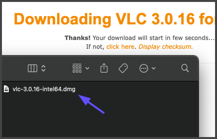
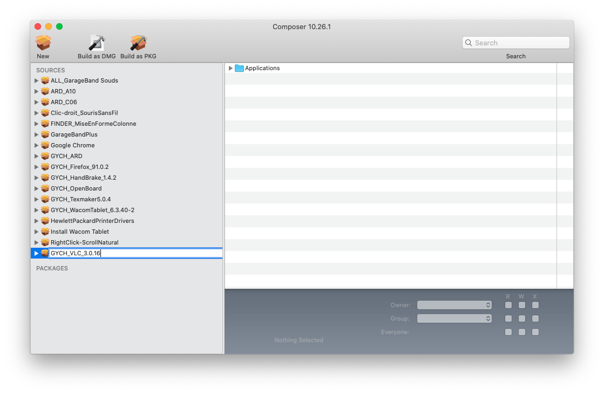
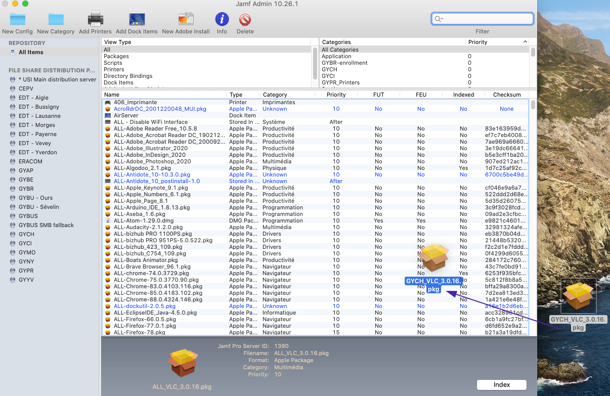
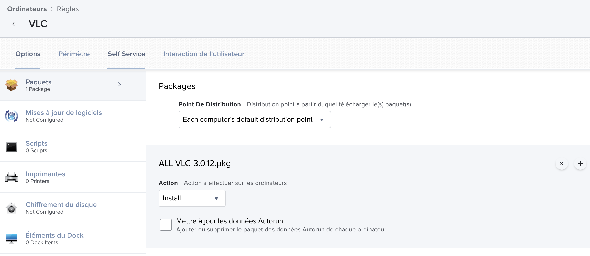
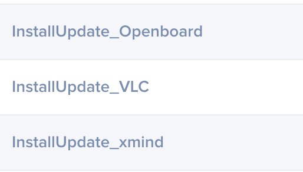
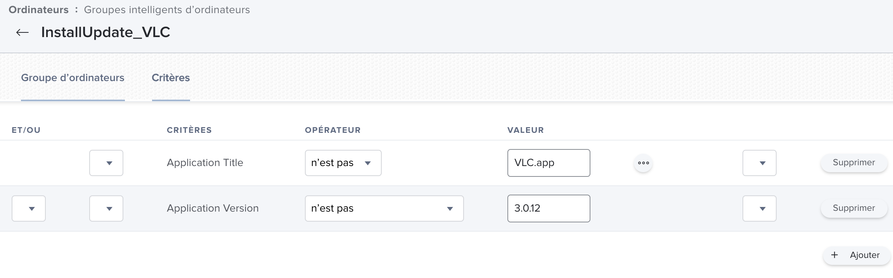

Mise à jour des applications dans Jamf
Contenu
Mise à jour des applications dans Jamf¶
Types des packages¶
Quand vous télécharger la nouvelle version de votre application/package, son type/format sera en pkg ou DMG.
Si c’est un PKG on est bon et on peut passer à l’étap Charger le PKG dans JamfAdmin. Si c’est un DMG, nous allons essayer de créer un PKG.
Création d’un PKG à partir d’un fichier DMG¶
Prenons comme exemple VLC qui est un DMG.
{kind=link}
Double cliquez sur ce package et l’installez sur votre système.
Ensuite dans le dossier /Applications vous aurez la nouvelle version du VLC, glissez le dans le paneau gauche du JamfComposer
Cela sera ajouté dans la liste des packages à traiter dans JamfComposer.
{kind=link}
Ensuite nous pouvons aller changer le nom du package pour que il aie la même norme de nommage que les autre packages.
GYCH_VLC_3.0.16.pkg
GYCH ou ALL pour montrer que c’est un packet global (ALL) ou specifique pour un etablissement (GYCH)
VLC: ici vous mettez le nom du package, normalement vous n’avez pas besoin de changer le nom du package
3.0.16: la version du package vient après le nom du package, l’info sur la version du package se trouve dans “à propos” de chaque application
{kind=link}
Maintenant on peut passer à créer le package en cliquant sur le “Build as PKG”
Choisissez ou vous sauvegardez votre PKG et JamfComposer commence à créer le PKG.
Charger le le PKG dans le JamfAdmin¶
Nous avons maintenant un package en format PKG qui est pret à être chargé dans le JamfAdmin. Ouvrez le JamfAdmin, et il vous juste suffit de glissez le .PKG dans JamfAdmin.
{kind=link}
Après avoir le mettre dans le JamfAdmin, sauvegardez les changements et le package sera accessible depuis le Jamf dans les règles.
Modification des règles pour le package¶
Ouvrez le Jamf dans votre navigateur, ensuite aller dans Règles Chercher le nom du package (VLC dans notre cas), modifiez le et dans “Paquets”, effacer l’ancien package et ajouter le nouveau puis sauvegardez.
{kind=link}
Pour finir, aller dans “Groupes intellignets” et chercher le nom de votre package. Vous allez trouver un group qui un nome commençant par “InstallUpdate_”
{kind=link}
Ensuite, tapez la nouvelle version du package dans le champ et sauvegardez.
{kind=link}